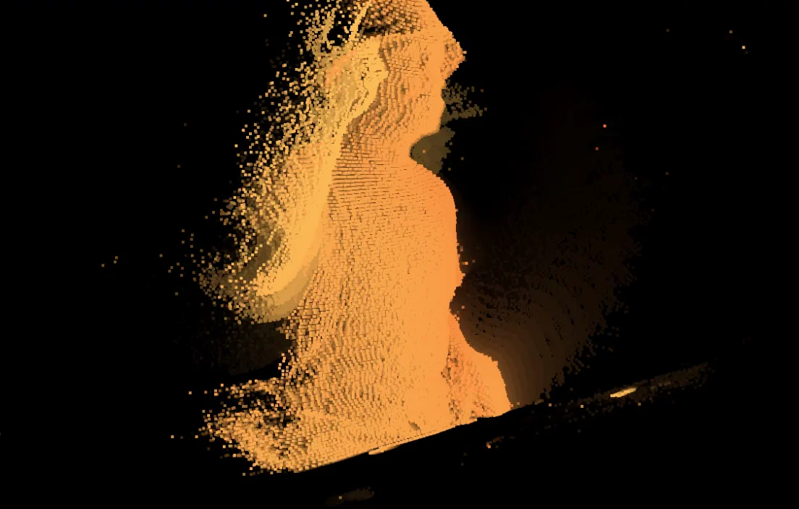
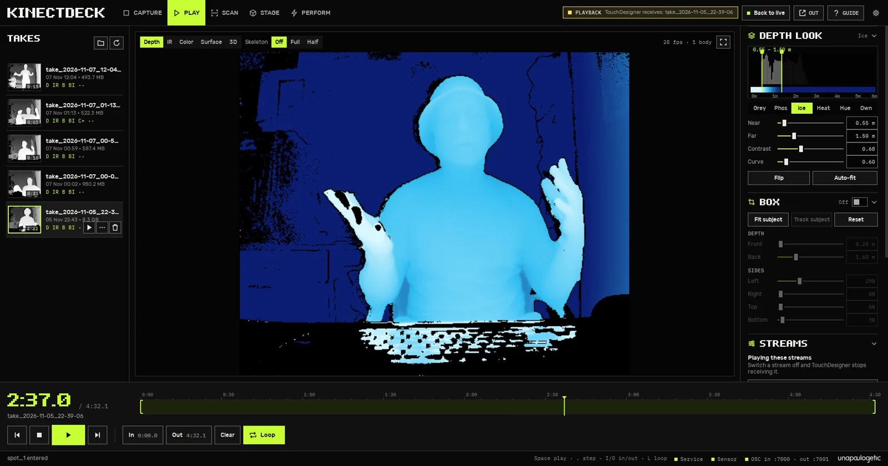
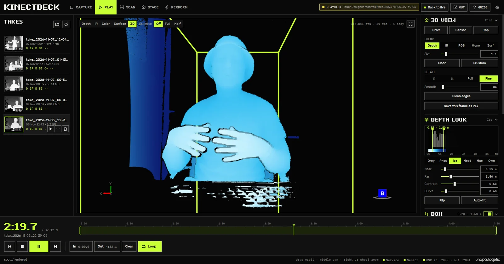
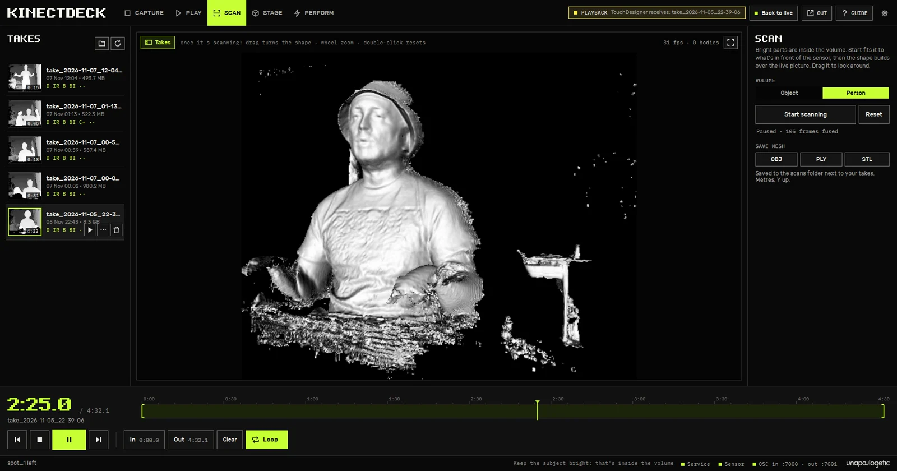
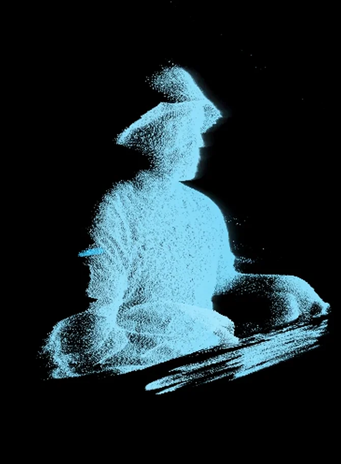
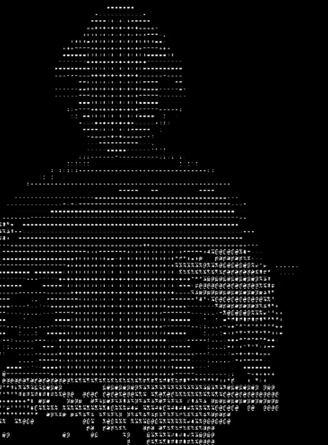
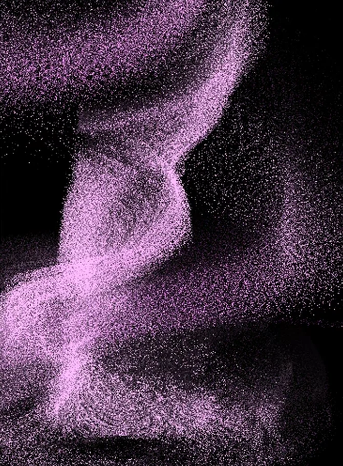
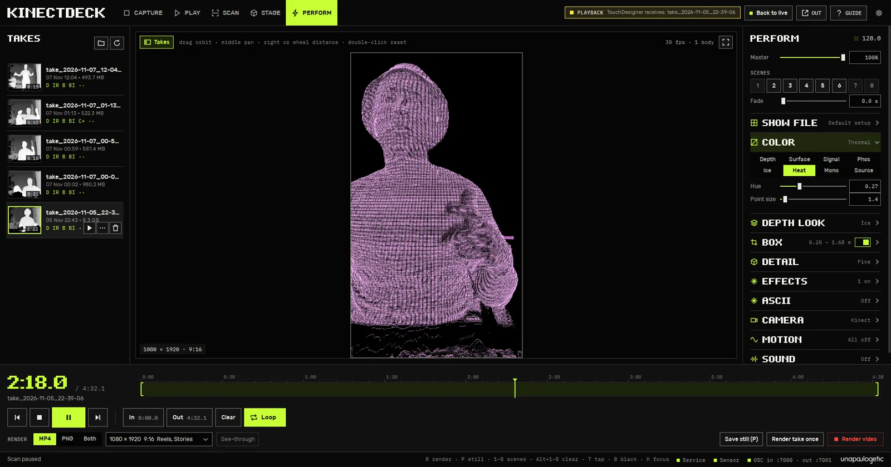
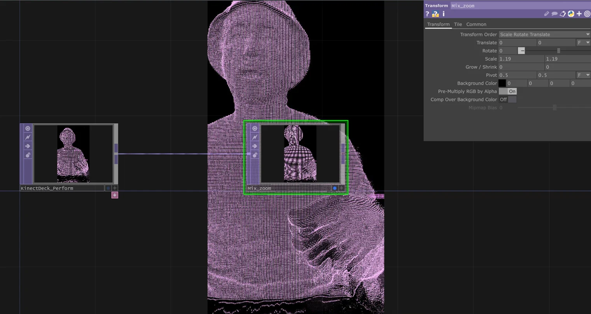
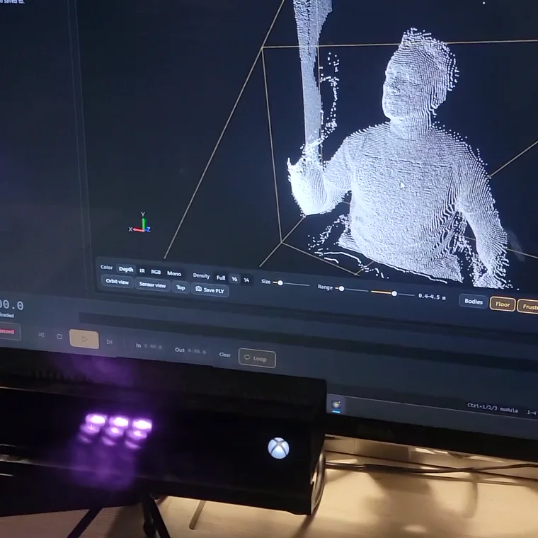

I built KinectDeck to get my old Kinect into TouchDesigner. Once I could bring in the live image and loop a take, I started cutting the room out of the depth image and seeing what I could do with the points that were left.
Capture and play
Choose the sensor streams you want and record a Kinect take (.xef). In Play, scrub the timeline, mark an in and out point, and loop that part while you work. Switch between depth, infrared, colour when captured, and a 3D point cloud. Use the Box controls to isolate the part of the room you want to see.

Scan and export
Save one frame as a PLY point cloud, or export a take as PLY frames, XYZ position EXRs or 16-bit depth and infrared PNGs. For a surface you can take into a 3D editor, Scan fuses successive depth frames from a live sensor or a saved take. Save the resulting geometry as OBJ, PLY or STL.


Perform
Work with the live sensor or a loop. Orbit the cloud, change its palette, leave motion trails or pull the points into a vortex. Save looks to eight scene slots for recall. Effects can respond to computer audio, and show controls can be driven by MIDI or OSC.



Into TouchDesigner
With the optional NDI runtime installed, open Out in KinectDeck and enable the Perform feed. In TouchDesigner, add an NDI In TOP and choose the source named KinectDeck Perform. The receiver gets a video image of the effect, ready to transform or composite in your patch.


Hardware and setup
- Connect a Kinect v2. Use the Kinect for Windows v2 or Xbox One Kinect with its powered PC adapter. Connect the adapter directly to a USB 3.0 port. Kinect v1 and Azure Kinect use different hardware and software.
- Set up a 64-bit Windows PC. Install the full Kinect for Windows SDK 2.0 before plugging in the sensor. KinectDeck uses .NET Framework 4.8. The beta targets Windows 11 x64, with clean-machine compatibility testing still underway.
- Add only the output tools you need. NDI is optional for video feeds. FFmpeg is optional for recording the Perform output to MP4 or a PNG sequence. Depth takes and mesh exports use KinectDeck's own capture and export workflow.

Beta in preparation
I’m preparing a small invited beta. The download will come after I’ve tested the Windows installer and checked capture, playback and output on the beta setup.